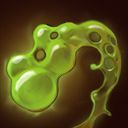
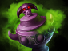
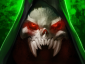
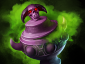
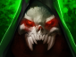

Dota 2 Builds
Bristleback
Ригварл никогда не уходил от драк и не поворачивался спиной к противнику, даже если тот был крупнее и сильнее его. Окрещенный пьяными толпами как Bristleback, он стал постоянным участником подпольных боев, что проводились в тавернах на тракте между Сломом и Эльзе. Однажды умелого бойца заприметил один трактирщик, искавший вышибалу в бар. За скромную выпивку он стал собирать с посетителей плату, следить за порядком и время от времени ломать конечности особо несговорчивым клиентам (а одному членистоногому бедняге однажды сломал целых пять). Но все же Ригварлу довелось встретить бойца, равного себе. Однажды во время очередной вечерней вахты, уже будучи навеселе от хмеля, он подошел за платой к одному кряжистому детине с севера и заплетающимся языком пробормотал: «Что-то не нравятся мне ваши бивни, уважаемый». Что тут началось! Это было побоище века! В бой бросилось с дюжину посетителей. Не уцелел ни один стул. Хотя Ригварл изрядно приложился к буянам, но и сам в полной мере схлопотал по печени. И все бы ничего, но случилось нечто страшное — клиент ушел, не заплатив за выпивку. За несколько недель раны вышибалы затянулись, а вырванные иглы отросли, но удар по чести был нанесен непростительный. Счет он оплатил из своего кармана, поклявшись выследить северянина и взыскать плату по полной. После этого он занялся тренировками, чего не делал никогда ранее, и неожиданно для себя сделал поразительное открытие. Расправив иглы и усмехнувшись сквозь зубы, он понял — иногда все же стоит показывать противнику спину.
Способности/Abulities
Thunder Clap
 Сотрясает землю, нанося урон всем врагам в области действия, а также замедляя их атаки и передвижение.
Сотрясает землю, нанося урон всем врагам в области действия, а также замедляя их атаки и передвижение.


Способность: ненаправленная
Действует на: врагов
Тип урона: магический
Радиус: 400 (Талант: 600)
Урон: 90/160/230/300
Замедление скорости передвижения: 25/35/45/55%
Замедление скорости атаки: 25/35/45/55
Длительность замедления: 4
Коли Магникс бьёт своей крепкой бочкой оземь — значит, быть веселью.Viscous Nasal Goo
 Обильно сморкается на жертву, снижая её броню и скорость передвижения. Эффекты способности складываются, а время действия обновляется с каждым её применением.Способность: направленная на юнита/ненаправленная (с Aghanim's Scepter)
Действует на: врагов
Дальность применения: 650 (Талант: 800)
Максимум эффектов: 4
Базовое снижение брони: 2
Снижение брони за каждый эффект: 1,5/2/2,5/3
Базовое замедление скорости передвижения: 15%
Замедление за каждый эффект: 3%/6%/9%/12%
Длительность на героях: 5
Длительность на крипах: 10
Простуду, подхваченную в снегах, Ригварл делает своим преимуществом.Drunken Brawler
 Герой может менять стойку в зависимости от элементов, которыми он управляет, и получать за это пассивные бонусы, усиливающиеся под действием способности Cinder Brew. Боец земли — даёт +1/3/5/7 к броне и +5/10/15/20% к сопротивлению магии. Под эффектом Cinder Brew бонусы умножаются на 3. Боец шторма — даёт +15/20/25/30% к уклонению и +5/7/9/11% к скорости передвижения. Под эффектом Cinder Brew бонусы умножаются на 3. Боец огня — даёт шанс в 24% нанести критической атакой 145/160/175/190% урона. Под эффектом Cinder Brew шанс умножается на 3.
Герой может менять стойку в зависимости от элементов, которыми он управляет, и получать за это пассивные бонусы, усиливающиеся под действием способности Cinder Brew. Боец земли — даёт +1/3/5/7 к броне и +5/10/15/20% к сопротивлению магии. Под эффектом Cinder Brew бонусы умножаются на 3. Боец шторма — даёт +15/20/25/30% к уклонению и +5/7/9/11% к скорости передвижения. Под эффектом Cinder Brew бонусы умножаются на 3. Боец огня — даёт шанс в 24% нанести критической атакой 145/160/175/190% урона. Под эффектом Cinder Brew шанс умножается на 3.
Способность: ненаправленная
Действует на: себя/врагов (с Aghanim's Shard)
Бонус к броне в стойке земли: 1/3/5/7
Бонус сопротивления магии в стойке земли: 5/10/15/20%
Уклонение в стойке шторма: 15/20/25/30%
Бонус к скорости передвижения в стойке шторма: 5/7/9/11%
Шанс срабатывания в стойке огня: 24%
Критический урон в огненной стойке: 45/160/175/190%
Cinder Brew множитель: 3 (Талант: 4)
Получив титул Хмелевара ордена Ойо, Мангикс также доказал всем, что он мастер опьянения.Viscous Nasal Goo
 Создаёт одного из воинов в зависимости от текущей стойки Drunken Brawler. Все способности воина перезаряжаются на 100% медленнее. Если воин окажется на расстоянии более 1600 от владельца, то не сможет применять способности и будет замедлен на 50%. Нового воина нельзя призвать, если существующий получал урон от врагов в последние 3 сек. Если воин умрёт, способность уйдёт на перезарядку в 70 сек. Одновременно может существовать только один воин. Он исчезнет, если применить способность Primal Split.
Создаёт одного из воинов в зависимости от текущей стойки Drunken Brawler. Все способности воина перезаряжаются на 100% медленнее. Если воин окажется на расстоянии более 1600 от владельца, то не сможет применять способности и будет замедлен на 50%. Нового воина нельзя призвать, если существующий получал урон от врагов в последние 3 сек. Если воин умрёт, способность уйдёт на перезарядку в 70 сек. Одновременно может существовать только один воин. Он исчезнет, если применить способность Primal Split.
Способность: ненаправленная
Действует на: себя
Штрафное расстояние: 1600
Количество воинов: 1
Замедление скорости передвижения воинов: 50%
Штраф к перезарядки за смерть: 50
Перезарядка при получении урона: 3
Продолжительность: постоянная
Мангикс смутно припоминает размышления старого учителя о том, что раздобыть товарища всяко лучше, чем пить в одиночку. Но не то чтобы Хмелевар строго придерживается этого принципа.Primal Split
 Герой разделяется на трёх выносливых воинов-элементалей. Если хотя бы один из них доживёт до окончания действия способности, герою вернётся его прежний облик.
Герой разделяется на трёх выносливых воинов-элементалей. Если хотя бы один из них доживёт до окончания действия способности, герою вернётся его прежний облик.
Способность: ненаправленная
Действует на: себя
Тип урона: мгновенное убийство
Длительность: 16/18/20
Время разделения: 0,6
Не ясно, осознает ли Мангикс свою могучую связь с природой, ибо она чаще всего проявляется во время пьянки.
Сборка/Builds
Starting items:


Early game:
 



Items situacionais:


Support:


Luxury:


ЭТА СБОРКА В STEAM